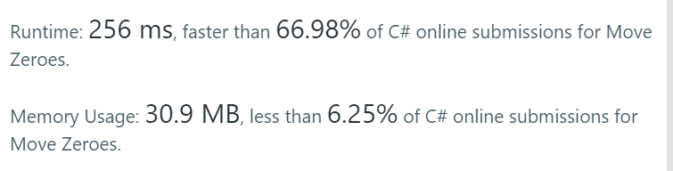
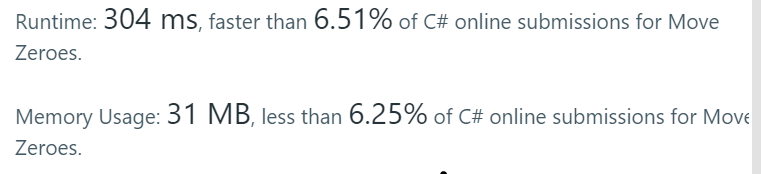
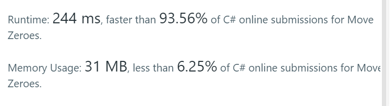
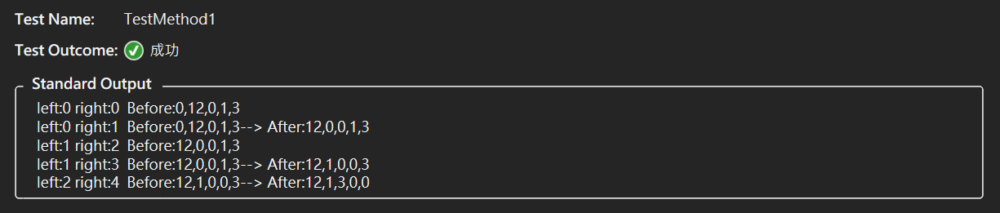
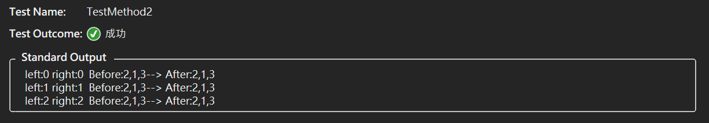
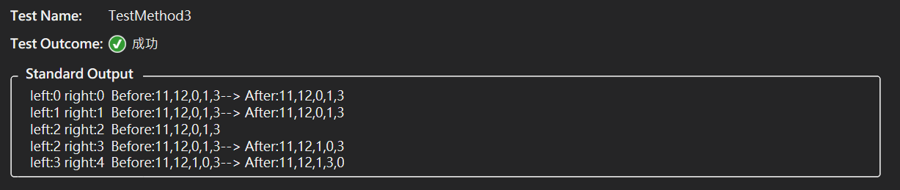

原始題目
Given an array nums, write a function to move all 0’s to the end of it while maintaining the relative order of the non-zero elements.
中文翻譯
今天團隊大神又帶萌新刷 LeetCode 了，原始題目是 LeetCode 的 Move Zeroes，但是為了挑戰性，加了一點限制
- 將數字陣列裡所有 0 的元素移到最後面
- 不改變其他數字的排序
- 直接在該陣列物件完成操作,不可複製或建立新的陣列
TestCase:
1 | Input: [0,1,0,3,12] |
解題
第一個版本
第一個版本就真的像是候捷說的全憑本能程序員，這個版本還算簡單，但進步空間還是很大的，套用了兩次迴圈，複雜度數值應該不會很好看
1 | public void MoveZeroes(int[] nums) |

第二個版本
這個版本開始採用了兩個指標，所以變得有點難以理解，最後還是依靠大神提點才搞出了這個版本，原本以為應該是不錯了，但是實際上跑出來的數值，感覺跟第一個版本沒啥明顯差異
1 | public void MoveZeroes(int[] nums) |

第三個版本
最終由大神說明最終版本的思路，一樣是採用兩個指標，指標 right 用來順序跑回圈往下走；指標 left 就是用來交換數值用的
- left 指標都必須指在 0 上面等著被交換
- right 指標只有在不是 0 的時候才做交換
1 | public void MoveZeroes(int[] nums) |

程式碼很簡短，速度也很快，第三種版本有一種豁然開朗的感覺，但是一開始就算知道思路，還是卡關很久，附上三個案例的步驟


陣列中沒有 0，在每一個步驟，left 實際上都是自己跟自己交換，然後最終 left 指標再+1

在步驟 3 的時候，right 碰到了 0，所以跳過不做事情；所以 left 也就被固定下來 (只有 right 碰到不是 0 的時候，left 才會增加)